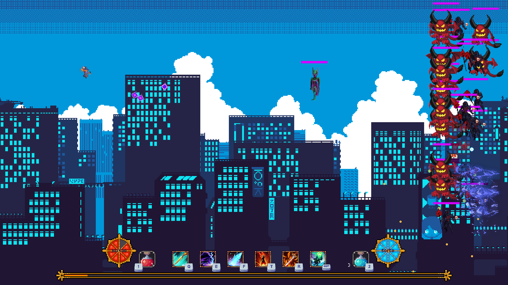
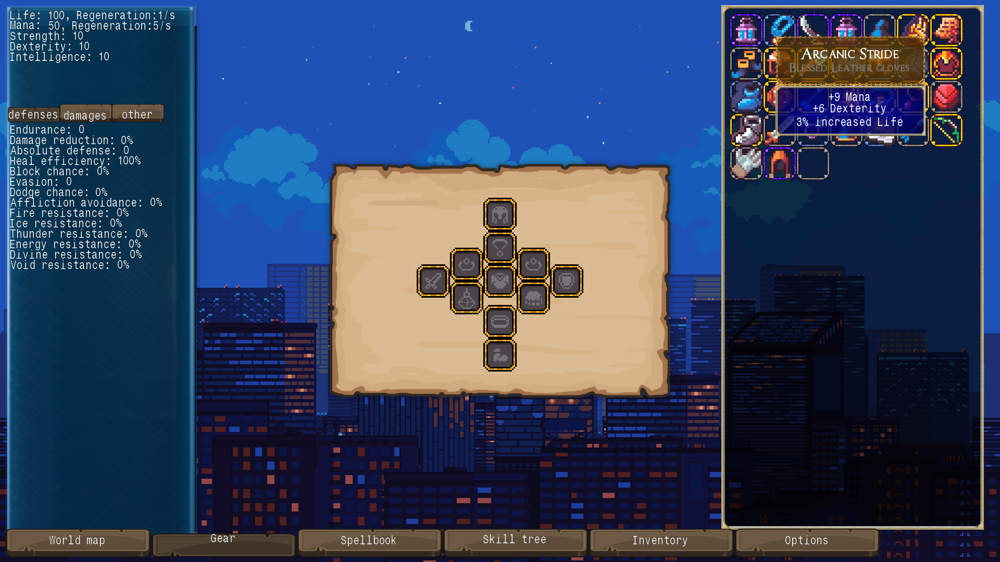
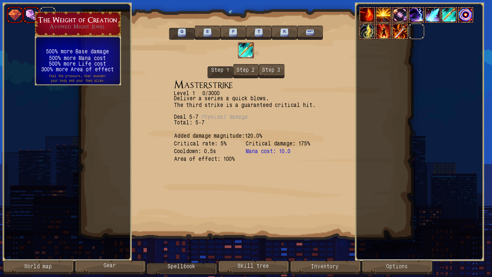
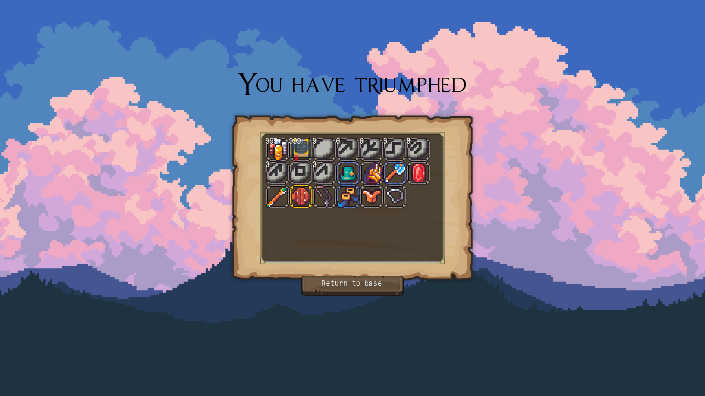
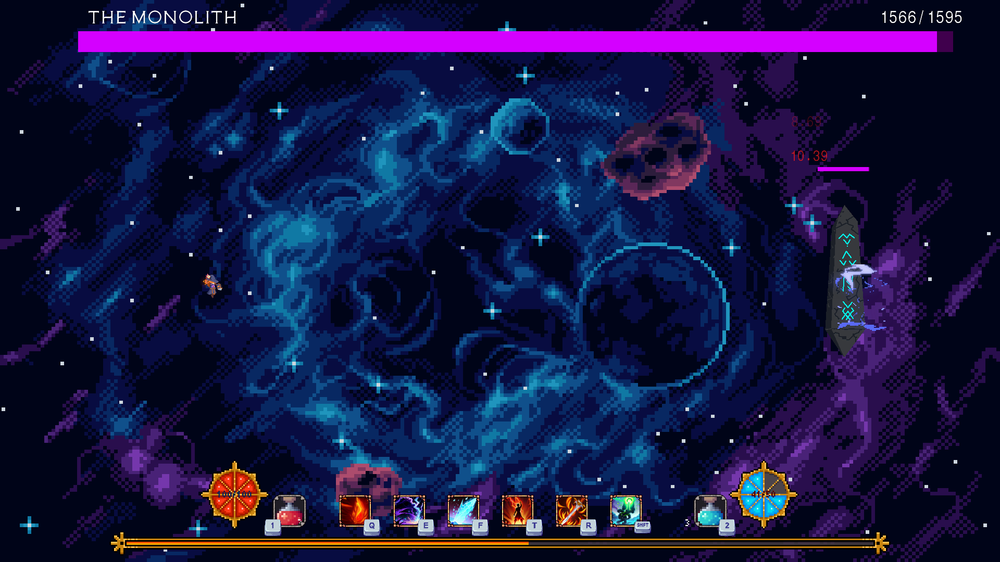

Gameuh.PY
BETTER NAME PENDING 
Gameuh is a free open-source game built in Python using Pygame only. It is a side-scroller with looter elements inspired by Exile-Likes game such a Path of Exile or Diablo.
The objective of the project is to produce a game that is not only fun to play, but also fully covered in unit tests and modular to allow easy contributions from the open-source community such as mods or forks. The code is also linted for maximum readability.
The ressources used in the game are all either created by me or sourced from free-to-use ressources with proper attributions in the credits section of the game.
The objective of the project is to produce a game that is not only fun to play, but also fully covered in unit tests and modular to allow easy contributions from the open-source community such as mods or forks. The code is also linted for maximum readability.
The ressources used in the game are all either created by me or sourced from free-to-use ressources with proper attributions in the credits section of the game.




